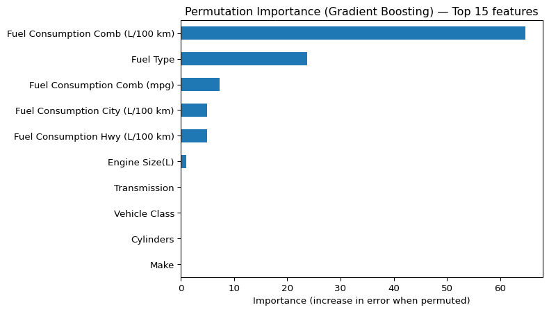
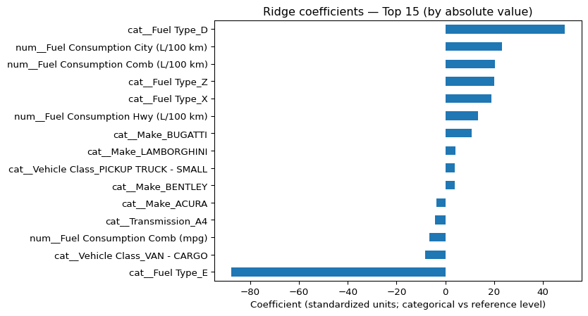

This mini-case builds a predictive model for vehicle CO₂ emissions (g/km) using engine characteristics, fuel consumption metrics, and a small set of categorical descriptors (make, vehicle class, transmission, fuel type).
Best-performing model (test split): Gradient Boosting Regressor
Benchmark: Ridge RMSE 5.08, Linear Regression RMSE 5.09
Key insight: Fuel consumption variables are the strongest predictors, while categorical vehicle attributes add incremental explanatory power.
Practical relevance: The model provides a fast, data-driven way to estimate emissions for reporting, scenario comparisons, and decision support.
2 Problem Statement
Vehicle fleets are often assessed on emissions impact for reporting, taxation, and sustainability decisions.
The objective of this case is to predict CO₂ emissions (g/km) from observable vehicle specifications and fuel consumption measurements.
A good solution should:
achieve low prediction error (RMSE/MAE), and
remain interpretable enough to explain which factors drive emissions.
3 Data
The file co2.csv contains car specifications, fuel consumption, and CO2 emissions.
Column
Description
Brand
The brand or manufacturer of the vehicle (e.g., Toyota, Ford, BMW).
Vehicle Type
Classification of vehicles based on size and usage (e.g., SUV, Sedan).
Engine Size (L)
Engine displacement volume in liters.
Cylinders
Number of cylinders in the engine.
Transmission
Type of transmission (e.g., Automatic, Manual).
Fuel Type
Type of fuel used by the vehicle (e.g., Gasoline, Diesel, Hybrid).
Fuel Consumption (City, Hwy, and Combined)
Fuel efficiency measured in liters per 100 kilometers (L/100 km).
The column Model has very high cardinality. One-hot encoding creates a very large feature space and reduces interpretability. For this portfolio case, I focus on drivers rather than “lookup by model”, and therefore drop Model.
I use a simple train/test split for a clean and reproducible benchmark. Numeric features are imputed and standardized; categorical features are imputed and one-hot encoded.
Code
cat_cols = [c for c in X.columns ifnot is_numeric_dtype(X[c])]num_cols = [c for c in X.columns if is_numeric_dtype(X[c])] preprocess = ColumnTransformer([ ("num", Pipeline([ ("imputer", SimpleImputer(strategy="median")), ("scaler", StandardScaler()) ]), num_cols), ("cat", Pipeline([ ("imputer", SimpleImputer(strategy="most_frequent")), ("onehot", OneHotEncoder(handle_unknown="ignore")) ]), cat_cols),])X_train, X_test, y_train, y_test = train_test_split( X, y, test_size=0.2, random_state=42)cat_cols, num_cols
Fuel Consumption Comb (L/100 km) 64.786857
Fuel Type 23.736850
Fuel Consumption Comb (mpg) 7.311599
Fuel Consumption City (L/100 km) 4.975677
Fuel Consumption Hwy (L/100 km) 4.883785
Engine Size(L) 0.961100
Transmission 0.063068
Vehicle Class 0.014883
Cylinders 0.014453
Make 0.013721
dtype: float64
Code
imp.sort_values().plot(kind="barh")plt.title("Permutation Importance (Gradient Boosting) — Top 15 features")plt.xlabel("Importance (increase in error when permuted)")plt.ylabel("")plt.show()

9 Model interpretation (linear surrogate)
The best predictive model is Gradient Boosting, but I use Ridge for interpretation because coefficients provide a stable, human-readable view of drivers under correlated features.
plt.figure()top.sort_values().plot(kind="barh")plt.title("Ridge coefficients — Top 15 (by absolute value)")plt.xlabel("Coefficient (standardized units; categorical vs reference level)")plt.ylabel("")plt.show()

Fuel consumption metrics (city/highway/combined) are among the strongest predictors of CO₂ emissions: higher consumption corresponds to higher emissions, as expected. Fuel type also shows large shifts relative to the reference category, indicating that the engine/fuel technology is a key driver of emissions. Brand and vehicle class variables add smaller adjustments that likely capture differences in vehicle segments (e.g., performance-oriented brands) not fully explained by the numeric consumption variables. Coefficients for numeric features are in standardized units (one standard deviation change), and categorical coefficients represent effects relative to the omitted reference level.
10 Limitations and next steps
No external validation: Results are based on a single random split; I would add k-fold cross-validation for robust benchmarking.
High-cardinality features: Dropping Model improves interpretability; in production, I’d test target encoding or embeddings if model-level prediction is needed.
Data scope: The dataset may not generalize to new markets, years, or different test conditions. Next steps: - Hyperparameter tuning + cross-validation - Try alternative models (XGBoost/RandomForest) (valgfritt) - Deploy pipeline / CLI / Streamlit demo